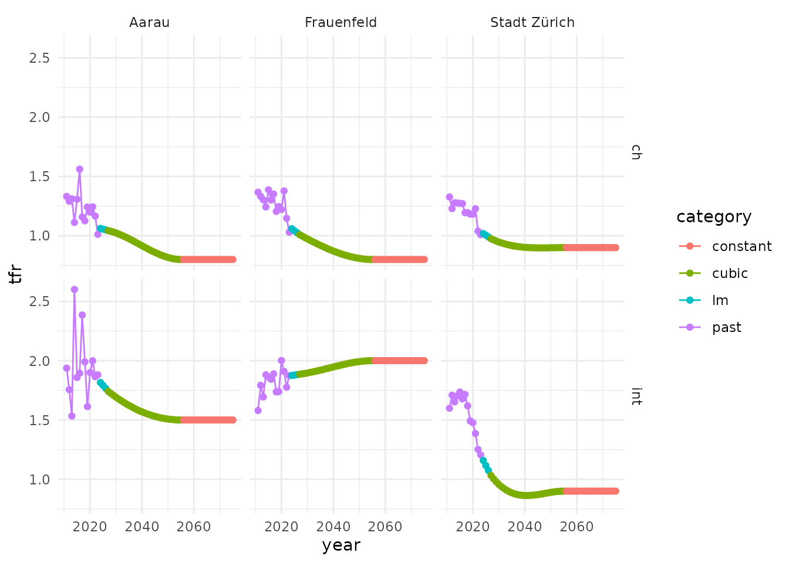
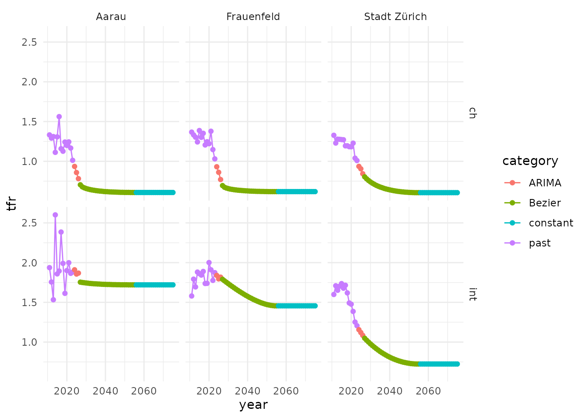
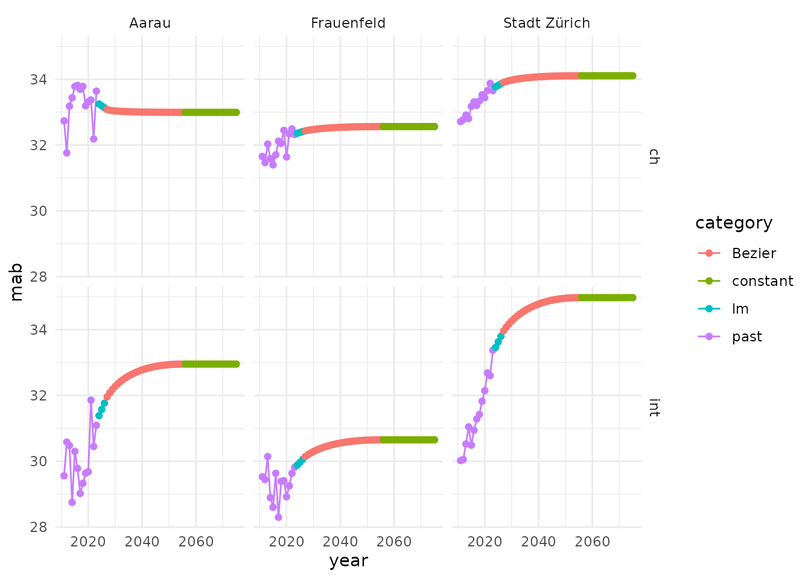

TFR and MAB forecast
forecast_tfr_mab.RmdOverview
After the input data preparation, forecasts for TFR (total fertility rate) and MAB (mean age of the mother at birth) are calculated. In general, the FSO uses the same model structure for both forecasts. However, different model types and parameters can be used for the TFR and MAB forecast.
The FSO model for TFR and MAB consists of three time periods
- trend period: in the FSO model usually a few years (one to five years)
- temporal period: the majority of forecast period (FSO: approximately until 2055)
- constant period: end of the forecast (FSO: from 2056 until 2075)

time periods
Trend period
In the original FSO model, for the trend model an ARIMA model is used for the trend period. Depending on the structure of the past TFR and MAB data, the ARIMA forecast is not always stable. Therefore, in propopbirth a linear model can be used as an alternative to the ARIMA model.
If an lm model is used, the window of past years
(trend_past) and the proportional amount of past years used
to fit the model (trend_prop) can be specified.This allows
for weighted or selective emphasis on recent data when calculating the
trend, which can be useful if trends are expected to change over time or
if older data is considered less relevant.
| module | description | values required |
|---|---|---|
| ARIMA | ARIMA model. The auto.arima function is used: auto.arima(x, d = 2, max.p = 3, max.q = 3) |
|
| lm | linear model (lm function) |
|
Temporal period
In general, the FSO uses given values for TFR and MAB at the end of the temporal period. These target points are more or less subjectively determined by the cantons. For the cantonal forecasts this is manageable. However, this is often not possible or meaningful (e.g. forecasts for many municipalities or other spatial units). Therefore, we provide in propopbirth an additional data-driven approach. In this approach, the target points of the temporal period (point C in the figure below) are derived using the trend period model. A parameter determines, how much of the trend model is used to calculate the target point C. Example: A parameter of 0.7 means: 70 % of the trend is projected to the future to determine point C.

target point with data driven approach
For the temporal period both approaches are possible
given values: a table with target values has to be provided (for each group, e.g. spatial unit and nationality).
data-driven approach: the proportion of trend has to be selected (parameter e.g. 0.7)
The FSO uses three alternative modules for the temporal period:
| module | description | values required |
|---|---|---|
| cubic | Interpolation from the start to the target point of the temporal period with a third-degree polynomial |
|
| Bézier | Interpolation from the start to the target point of the temporal period with a Bézier-curve |
|
| constant | The last value of the trend period is used for the temporal period |
|
Constant period
For the last section of the TFR and MAB forecast the FSO uses a constant model.
| module | description | values required |
|---|---|---|
| constant | The last value of the temporal period is used for the constant period |
|
Examples
Create input data
library(propopbirth)
library(ggplot2)
library(dplyr)
# load package data
data("fso_pop")
data("fso_birth")Create input data
input <- create_input_data(
population = fso_pop,
births = fso_birth,
year_first = 2011,
year_last = 2023,
age_fert_min = 15,
age_fert_max = 49,
fert_hist_years = 3,
binational = TRUE
) Example 1
topic: TFR forecast
approach: given target points
trend model: linear
temporal model: cubic
Given target points (subjectively selected values)
temporal_end_tfr <- tidyr::expand_grid(
spatial_unit = c("Aarau", "Frauenfeld", "Stadt Zürich"),
nat = c("ch", "int")) |>
dplyr::mutate(y_end = c(0.8, 1.5, 0.8, 2.0, 0.9, 0.9))TFR forecast
forecast_tfr_example1 <- forecast_tfr_mab(
topic = "tfr",
topic_data = input$tfr,
trend_model = c(
model = "lm", start = 2024, end = 2026, trend_past = 7, trend_prop = 0.5
),
temporal_model = c(
model = "cubic", start = 2027, end = 2055, trend_prop = 0.8, z0_prop = 0.7,
z1_prop = 0
),
temporal_end = temporal_end_tfr,
constant_model = c(model = "constant", start = 2056, end = 2075)
)
ggplot(forecast_tfr_example1) +
geom_line(aes(x = year, y = tfr, color = category)) +
geom_point(aes(x = year, y = tfr, color = category)) +
facet_grid(nat ~ spatial_unit) +
theme_minimal()
Example 2
topic: TFR forecast
approach: data-driven
trend model: ARIMA
temporal model: Bézier
forecast_tfr_example2 <- forecast_tfr_mab(
topic = "tfr",
topic_data = input$tfr,
trend_model = c(
model = "ARIMA", start = 2024, end = 2026, trend_past = 7, trend_prop = 0.5
),
temporal_model = c(
model = "Bezier", start = 2027, end = 2055, trend_prop = 0.8, z0_prop = 0.7,
z1_prop = 0
),
temporal_end = NA,
constant_model = c(model = "constant", start = 2056, end = 2075)
)
#> Registered S3 method overwritten by 'quantmod':
#> method from
#> as.zoo.data.frame zoo
ggplot(forecast_tfr_example2) +
geom_line(aes(x = year, y = tfr, color = category)) +
geom_point(aes(x = year, y = tfr, color = category)) +
facet_grid(nat ~ spatial_unit) +
theme_minimal()
Example 3
topic: MAB forecast
approach: data-driven
trend model: linear
temporal model: Bézier
forecast_tfr_example3 <- forecast_tfr_mab(
topic = "mab",
topic_data = input$mab,
trend_model = c(
model = "lm", start = 2024, end = 2026, trend_past = 7, trend_prop = 0.5
),
temporal_model = c(
model = "Bezier", start = 2027, end = 2055, trend_prop = 0.3, z0_prop = 0.7,
z1_prop = 0
),
temporal_end = NA,
constant_model = c(model = "constant", start = 2056, end = 2075)
)
ggplot(forecast_tfr_example3) +
geom_line(aes(x = year, y = mab, color = category)) +
geom_point(aes(x = year, y = mab, color = category)) +
facet_grid(nat ~ spatial_unit) +
theme_minimal()